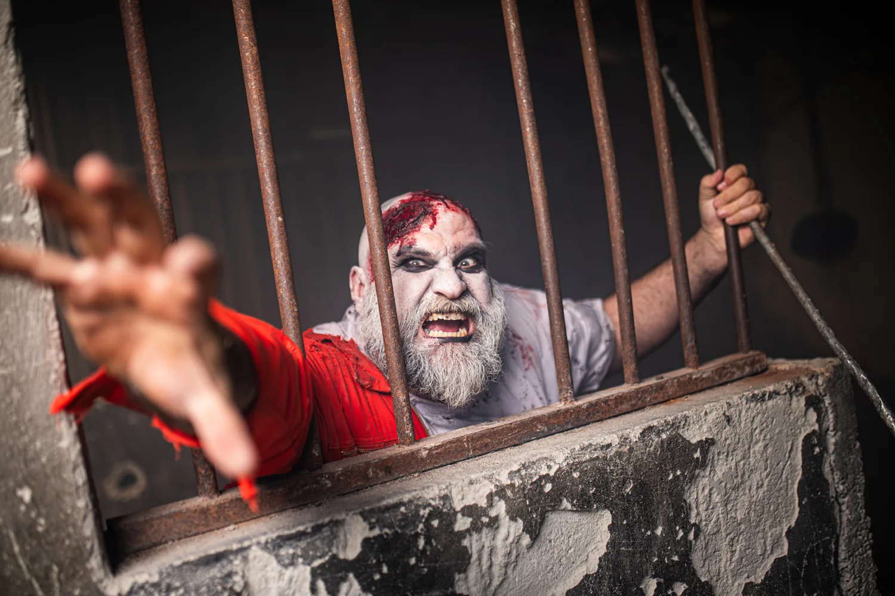
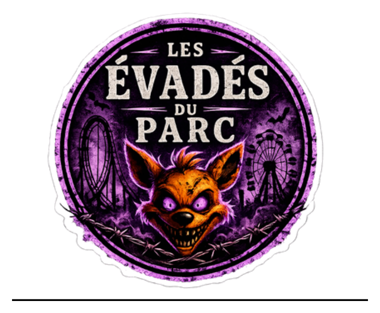
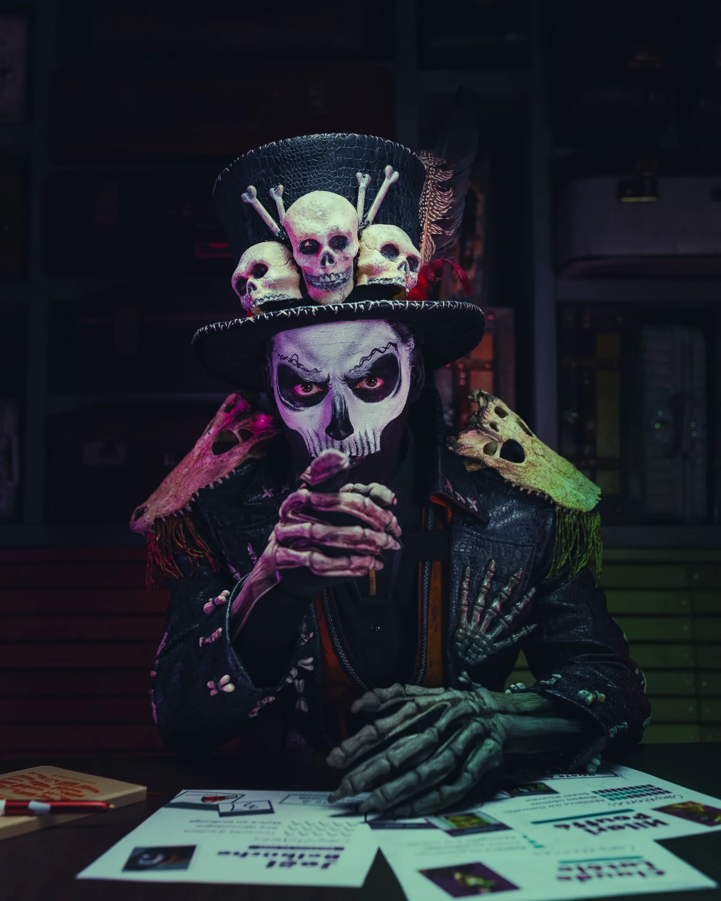
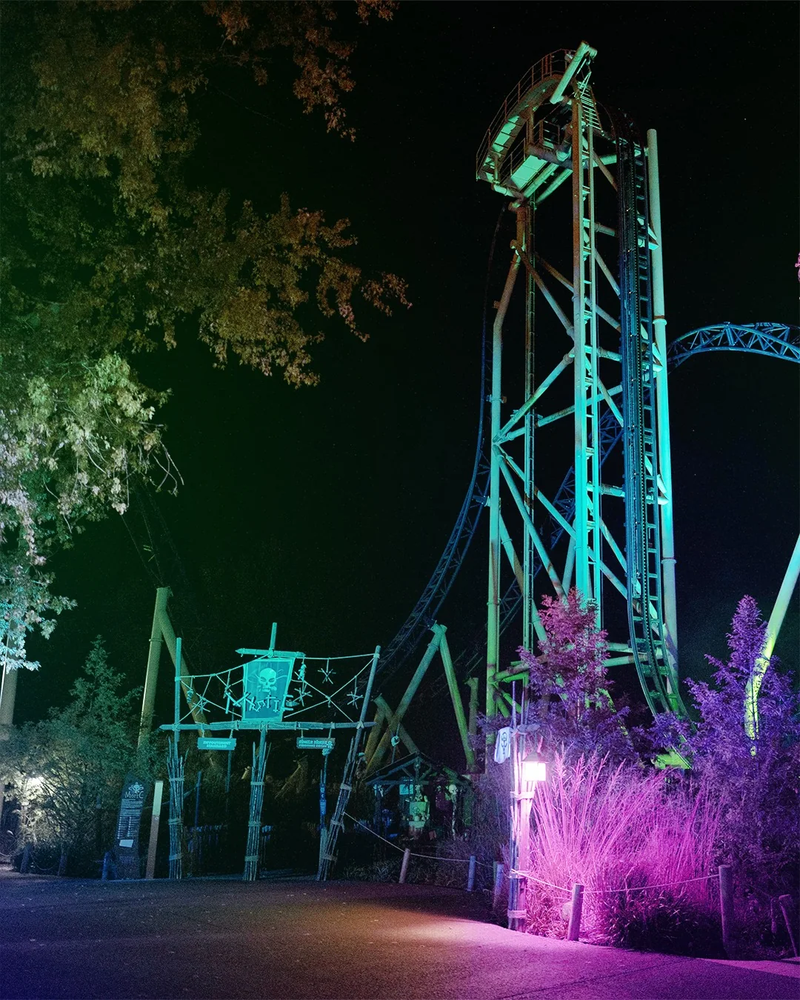
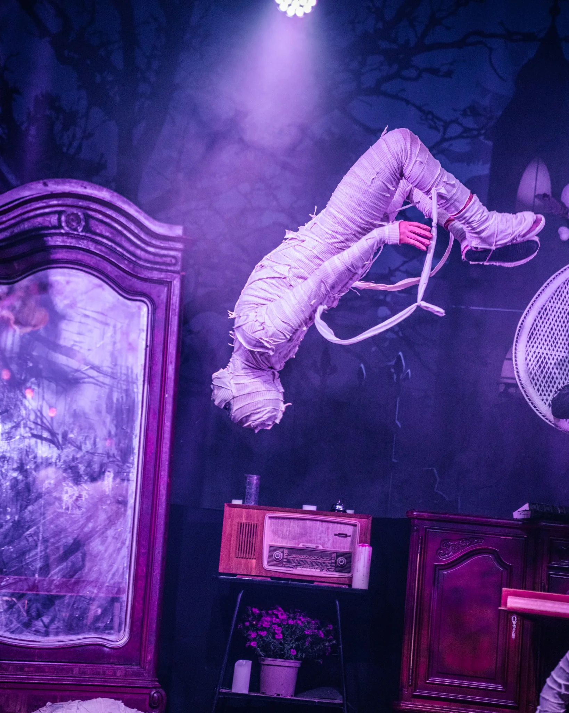
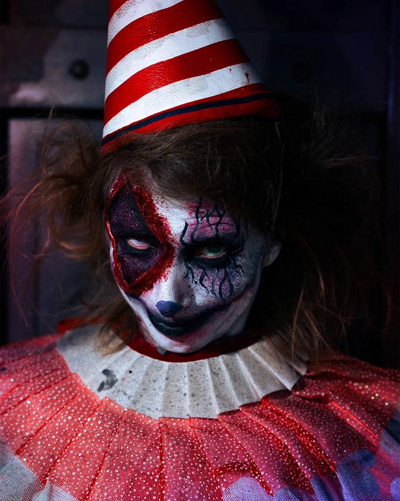
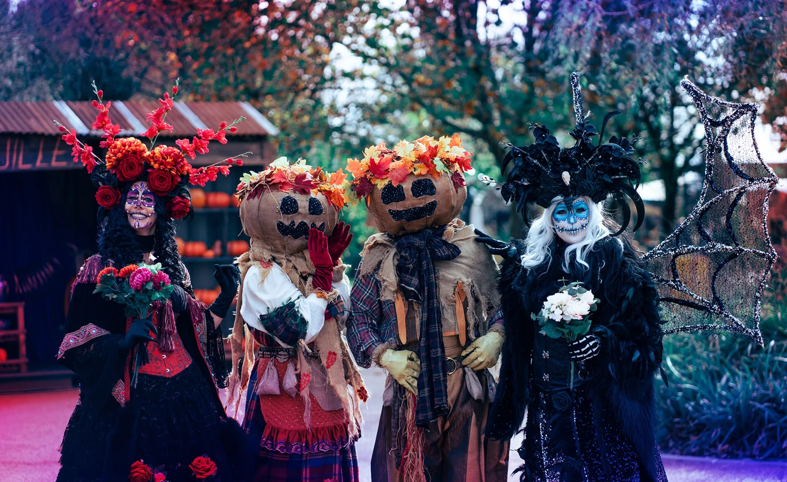
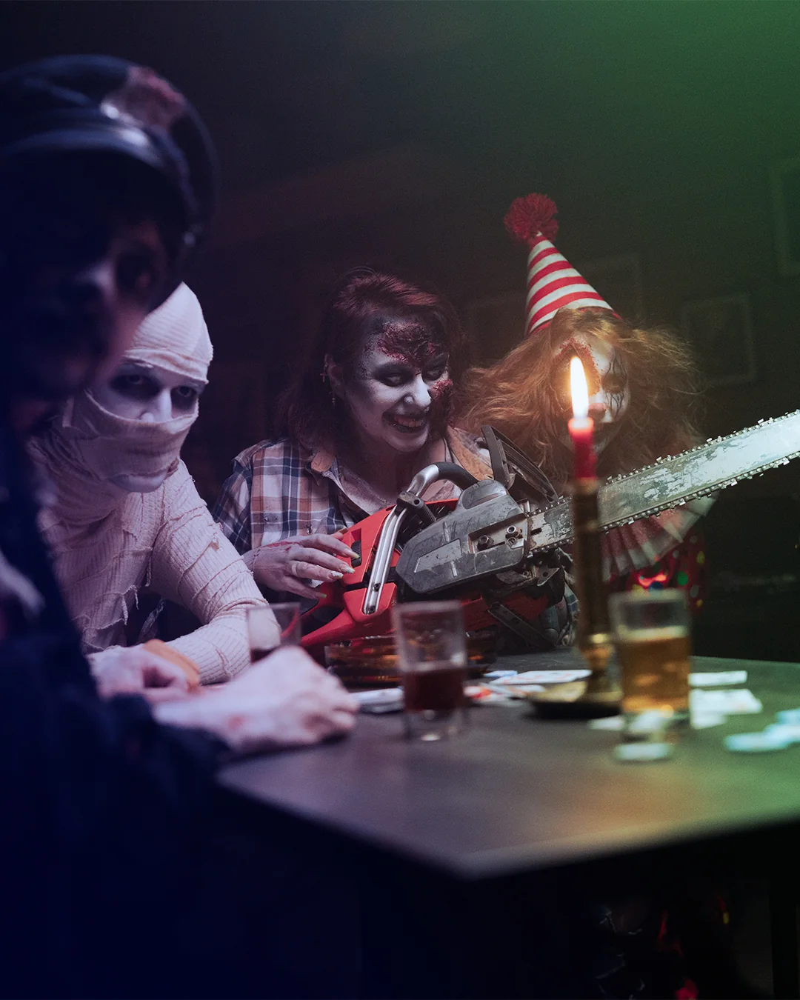

01
Restez soudés
Dix personnes, une même mission. Votre équipe devra avancer ensemble et ne laisser personne derrière.

SUMMERWEEN27.08.2026 · 19H · WALIBI RHÔNE-ALPES
présente
L’ÉTÉ BASCULE DANS HALLOWEEN
Le 27 août, le Docteur Mystic recherche 100 volontaires pour une expérience estivale qui ne ressemble à aucune autre.
LE DOSSIER S-27
Le Dr Mystic ne pourra malheureusement pas être présent physiquement ce soir-là… Une étrange force l’a retenu dans les profondeurs de son laboratoire.
Mais rassurez-vous… son esprit hantera les lieux et ses expériences continueront de vous observer. Oserez-vous lui rendre visite ?
Cent participants seront réunis pour une expérience dont les règles ne seront révélées qu’au dernier moment. Les volontaires seront répartis en équipes de dix. Pour le reste, il faudra suivre les instructions… et rester soudés.
100 places. 10 par équipe. Un protocole tenu secret.


L’EXPÉRIENCE
Le soir venu, les participants seront répartis par groupes de dix. Plusieurs étapes les attendront dans l’univers du Docteur Mystic, mais le reste du protocole demeurera secret jusqu’au dernier moment.

Dix personnes, une même mission. Votre équipe devra avancer ensemble et ne laisser personne derrière.

Chaque étape révélera une nouvelle partie du protocole. Observez, échangez et gardez votre sang-froid.

Le déguisement reste facultatif, mais les looks estivaux, horrifiques ou totalement hybrides sont les bienvenus.
100 volontaires. 10 par équipe. Le protocole reste secret.
LE RENDEZ-VOUS
Pour que l’expérience puisse commencer dans de bonnes conditions, tous les participants devront être présents à l’Espace du Personnel avant le lancement.
POINT DE RENDEZ-VOUS
Le lancement commencera à 19 h précises. Merci d’arriver quelques minutes en avance pour préserver le bon déroulement de la soirée.
PROTOCOLE S-27
Une fois les équipes réunies, le Docteur Mystic dévoilera la suite. Le reste doit demeurer confidentiel.


100 PLACES SEULEMENT
L’inscription se fait directement en ligne. Les 100 participants seront ensuite répartis en équipes de dix pour le lancement de l’expérience.
Condition obligatoire : être sous contrat chez Walibi Rhône-Alpes le 27 août 2026, jour de la soirée.
Important : sans réservation préalable, aucun accès à la soirée ne sera possible.
Les places étant limitées, merci de ne vous inscrire que si vous êtes certain de pouvoir être présent à 19 h.
INFORMATIONS PRATIQUES
Espace du Personnel · arrivez quelques minutes en avance
Les inscriptions fermeront dès que la jauge sera atteinte
La répartition sera communiquée avant ou au début de la soirée
Sans réservation préalable, aucun accès à la soirée ne sera possible.
Le déguisement n’est pas obligatoire, mais vous pouvez jouer le jeu. Les tenues Walibi ne sont pas autorisées pour la soirée.
Aucun masque ou accessoire couvrant le visage ne sera autorisé.
Les armes et répliques, même factices, sont strictement interdites.
Le règlement intérieur de Walibi Rhône-Alpes s’applique durant toute la soirée.
QUESTIONS FRÉQUENTES
L’inscription est réservée aux personnes qui seront sous contrat chez Walibi Rhône-Alpes le 27 août 2026.
La soirée est limitée à 100 participants. Le formulaire pourra être fermé dès que toutes les places auront été réservées.
Les participants seront répartis en équipes de dix. Les modalités précises de répartition seront communiquées avant ou au début de la soirée.
Le rendez-vous est fixé à 19 h précises à l’Espace du Personnel. Merci d’arriver quelques minutes en avance.
Le lancement est collectif et dépend de la présence de toutes les équipes. Un retard pourrait perturber le déroulement prévu de la soirée.
Le déguisement est autorisé, mais il n’est pas obligatoire. L’idée est surtout de jouer le jeu de Summerween, entre été et Halloween.
Non. Pour des raisons de visibilité et de sécurité, le visage devra rester visible. Aucun masque ou accessoire couvrant le visage ne sera autorisé.
Les accessoires simples sont acceptés s’ils respectent le règlement intérieur. Les armes et répliques, même factices, sont strictement interdites.
Non. Les tenues Walibi ne sont pas autorisées pendant la soirée. Vous pouvez venir en tenue personnelle ou déguisée, tant que le visage reste visible et que le règlement intérieur est respecté.
Le règlement intérieur de Walibi Rhône-Alpes s’applique durant toute la soirée.
Le concept complet restera volontairement secret jusqu’au lancement. Le site et le teaser donnent l’ambiance, mais ne révèlent pas le protocole du Docteur Mystic.
Non. Mystic sert de décor et d’inspiration à l’univers du Docteur Mystic. Sa présence sur le site ou dans le teaser ne constitue pas une annonce d’ouverture de l’attraction.
Cette page sera mise à jour. En rescannant le même QR code, vous retrouverez automatiquement la dernière version disponible.